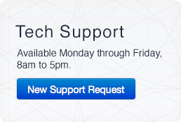

The Computing and Information Systems group provides computer support and technology solutions for Physics & Astronomy department faculty, students, and staff. This website is the starting point for questions regarding your workstation, software, or other technical concerns.
General hours are Monday through Friday from 8am to 5pm. For help accessing e-mail, connecting to department resources, or other common questions, please see our database of tutorial articles by clicking "How-To Articles" in the main menu above. If your question is not answered by a tutorial article, please submit a support request by clicking "New Support Request" below.
This is from David Shaw, the Chief Information Officer for UCLA . If you use Sophos as your anti-virus software platform, please note that UCLA support for Sophos will end on October 28, 2021.
If you're a new faculty or staff member, this webpage will help guide you on subjects such as email setup, VPN, web development, computer hardware and software, and UCLA computing resources.
UCLA is known for its commitment to providing students with a learning environment and curriculum that engages them with the knowledge and skills that will prepare them for future success. With this in mind, UCLA is implementing a new LMS that will:
Check the LMS Transformation website , Bruin Learn, for schedules, training, and updates.
Click here for BruinLearn resources .
Spam email reporting procedure:
"Not Spam" (Ham) email reporting procedure:
When to report spam?
It's also important to note that we don't really need to be informed when things are working as intended, but instead only if the messages were not properly sorted. So you really only need to follow the reporting process if:
It is a message you wanted in your Inbox, but it arrived in your Junk folder instead
or
It is a spam message that arrived in your Inbox, but it should have gone into the Junk folder instead.
Also be aware that if you are forwarding email anywhere, the forwarded mail is NOT filtered at all! The spam filter is only applied for our local Physics & Astronomy mailboxes.
It's become more common these days for computer account hackers to try to hijack email accounts. Typical methods involve sending you an "official-looking" email to ask for your account information, such as your login ID and especially your password. Or sometimes the email suggests your account is full and asks you to click a link to access your email.
Are you a student? Read about some scams that particularly target students .
More recently hackers have become creative. Have you received an email that asks you to click on a link to confirm an upcoming shipment...one that you are definitely not expecting?
Did you receive an email asking you to click on a link to upgrade your email account, claiming that if you don't, your account will be suspended?
Or how about a veiled attempt at extortion, claiming that compromising video of you will be made public unless you pay a "ransom" in bitcoins or some other questionable currency?
If you're a student, has someone contacted you about hiring you for a service and wants to pay you with a check that's more than you're charging them? Are they urging you to deposit it and sent them the balance?
These are all scams, and they're common. Each of them hopes to trick you into clicking on a link where you'll be prompted to share your password or your login credentials to other sites.
Don't fall for these tricks!
You can avoid these attempts when you read this guide to help you distinguish safe emails from dangerous ones...and never send your password to anyone in an email.
|  |
For computing-related issues and questions such as: |